我抓了 40 个页面（27 个数据产品 + 12 个真实在跑的数据界面 + 2 个数据新闻站）， 只挑出下面这些。先说结论：问题不在颜色，在结构语法。
先把这个钉住，后面所有判断都从这来
这不是审美偏好，是训练数据的后果。模型学到的是「dashboard = 一堆圆角卡片 + 大数字 + 渐变」， 于是不管内容是什么，都会往这个模子上套。你看着眼熟，就是因为你看过的 AI 生成页面全是这个结构。
plausible.io/plausible.io —— 真实产品，不是概念稿，任何人都能打开
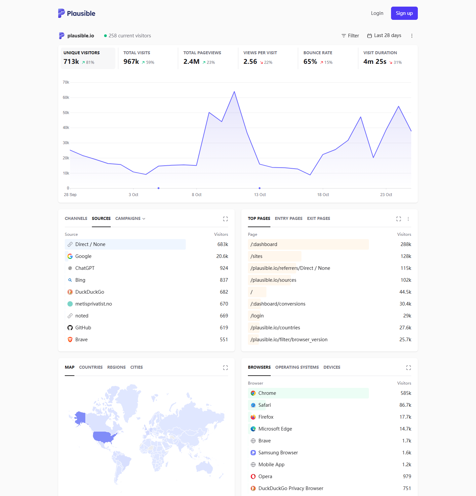
这页和我们要做的事几乎同构：都是「一个时间范围 + 几个比率 + 一张图 + 几张排行表」。它可以逐条对照：
六个指标之间只用 1px 竖线分隔，共用外框。如果做成六张独立卡片， 视线必须一个个跳，而且六张卡片会把「这是一组同级指标」这个信息打散。 我们原来顶部那 4 个数字做对了（也是竖线分隔），但页面中段又退回了卡片。
没有纵网格、没有图例框、没有标题栏。Y 轴标签在框外，X 轴只标 5 个刻度。 对比我们的小地图面板：标题、说明、图例、四个小卡全挤在一个框里 —— 信息是够的，但读者要自己找起点。
CHANNELS / SOURCES / CAMPAIGNS 一行切换，下面是表。
反面教材就是我们原来的每个面板：标题一行、灰色说明一行、内容再一行，重复了六次。
这个三段式是模板最明显的指纹。
Direct / None 683k 那一行，浅蓝色块从左侧铺满整行高度，长度就是占比。
数字压在色块上，不需要额外图例。这比「数字 + 下面一根小横条」省一半视觉噪音，
因为色块本身就是行背景，不占新空间。
紫色只出现在折线和选中态；绿色/红色只表示涨跌。没有第二个装饰色。 我们的页面里红色同时承担了「品牌」「警示」「负向」「选中」四种含义 —— 这就是为什么它显得吵。
同类的站很多，这五个各有一个不可替代的点
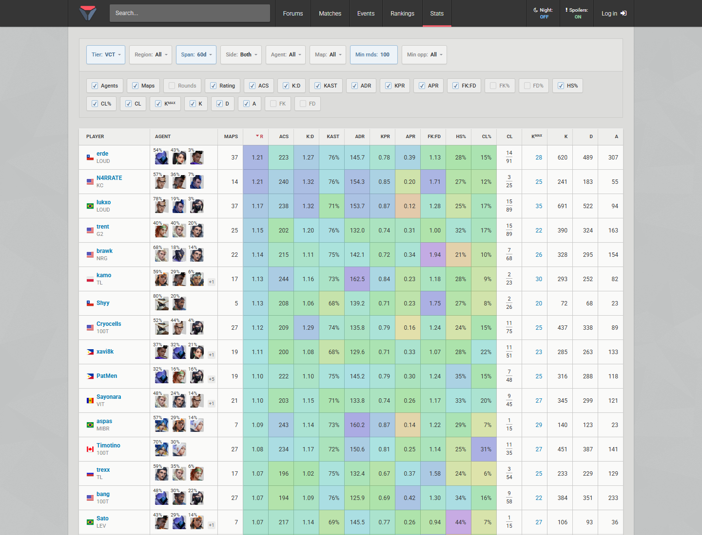
它是我们数据源自己的界面，密度比我们高得多，但读起来不乱。三个手法： （a）整张表一个外框，内部不套任何小卡； （b）表头深底白字，和内容区一刀切开； （c）关键列直接给单元格底色（红/绿深浅表示好坏），不需要读者心算。 最后这条是「专业工具感」的主要来源 —— 它承认读者是来比大小的，不是在读文章。
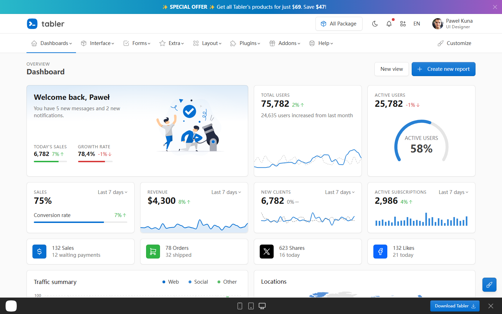
开源后台模板里做得最干净的一个。值得学的是：数字旁边放趋势线，而不是把数字放大到 40px。 大数字只在「这一个数是全页主角」时才成立，一屏出现六个大数字就等于没有主角。
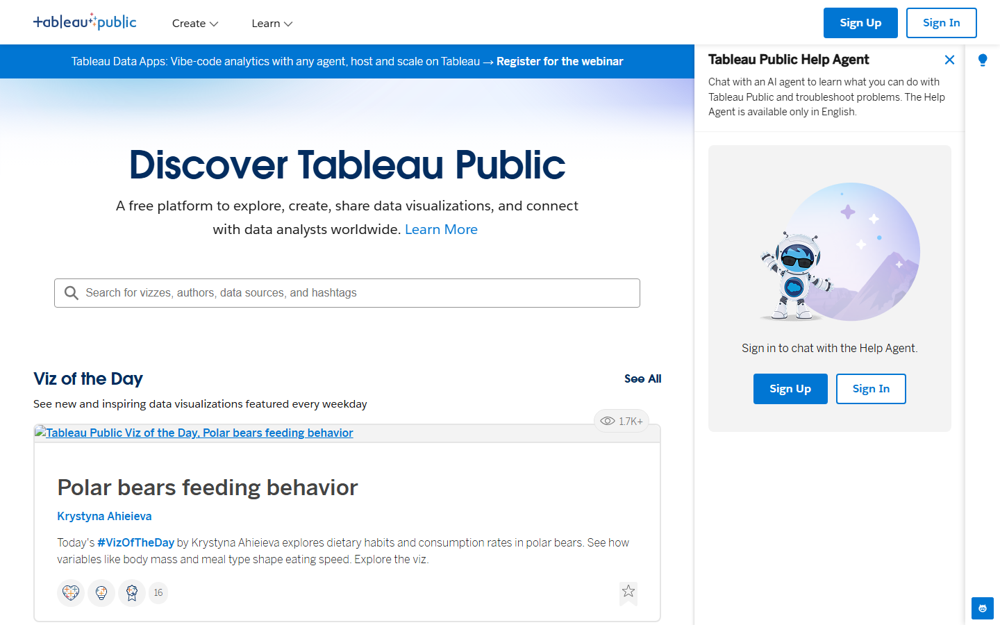
它的界面存在感极低：白底、灰字、缩略图撑满。这条对我们有用 —— 数据页面不需要「装饰」，需要的是让数据本身占据面积。我们那些 1px 边框和圆角， 有相当一部分是在给「空的地方」找事做。
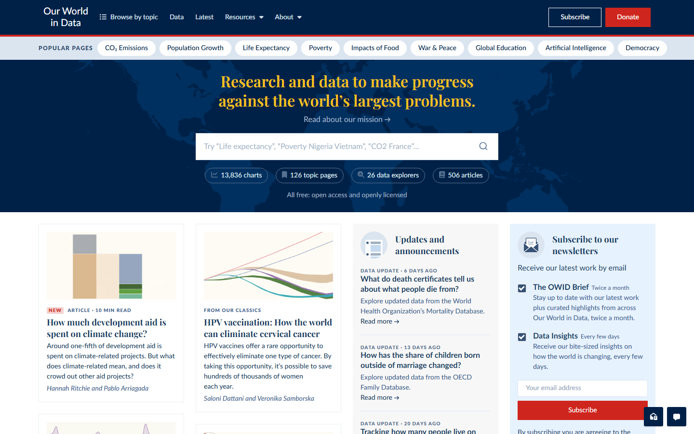
衬线标题 + 无边框图表，是这个站最强的两个特征。它敢用留白分组，而不是用框分组。 我们现在的六个面板全靠边框划分 —— 如果去掉一半边框、改成靠间距，会立刻「像人做的」。
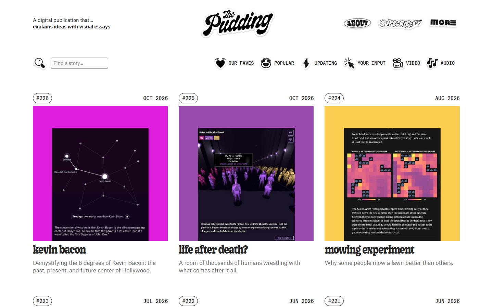
这条最反直觉：完全一致的网格反而是机器的证据。 人做的页面里，重要的块会更大、更花、位置更靠前；次要的块会安静地退到一边。 AI 做出来的页面所有块一样大、一样重、一样圆角 —— 因为没有「什么更重要」这个判断。
逐条对我们自己的页面，不是泛泛而谈
| 症状 | 为什么一眼假 | 真实产品怎么做 | 我们 |
|---|---|---|---|
| 所有区块同一种圆角卡片 | 六个大小不同、重要性不同的块，外观完全一样，等于没有层级 | Plausible 一页 4 个框，重要程度靠位置和面积区分 | 已改内层卡片全部拆掉 |
| 药丸 chip 做筛选 | 圆角胶囊 + 填充色选中，是 2021 之后所有模板的标配 | VLR 用原生 select；Plausible 用下划线 tab | 已改改成下划线 tab |
| 每个卡片都「标题 + 说明 + 内容」 | 同一句话结构重复六次，读起来像填表 | 标题只出现一次，说明进图注或 tooltip | 部分说明改成了小字注脚 |
| 卡片里套卡片 | 第二层框没有任何功能，纯装饰 | 用发丝线或间距分隔，不加第二个框 | 已改四个小卡 → 横线规格表 |
| 满屏强调色 | 红色同时表示品牌、警示、负向、选中，强调失效 | 一个主色 + 正负两色，别的不上色 | 已改选中态不再用红填充 |
| 大写字母 + 大字距的英文微标签 | 中文界面里这层「设计感」最廉价，且不提供信息 | 数字页很少用这层装饰 | 已删去掉 VCT 2026 SEASON |
| 间距完全均匀 | 每个 gap 都是 14px，表格和区块一个呼吸节奏 | 表格紧、区块松，靠疏密制造分组 | 部分 |
| 为了显高级而加的交互 | 功能已经有了，还加 ⌘K 搜索、数字滚动、逐行入场 | 只在真的省事时才加，其余一律不动 | 已删命令面板整个移除 |
同一块屏幕，改前 / 改后
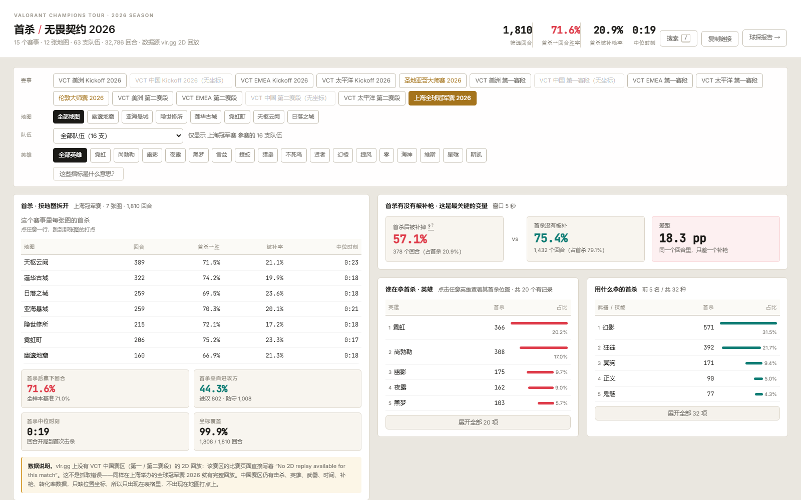
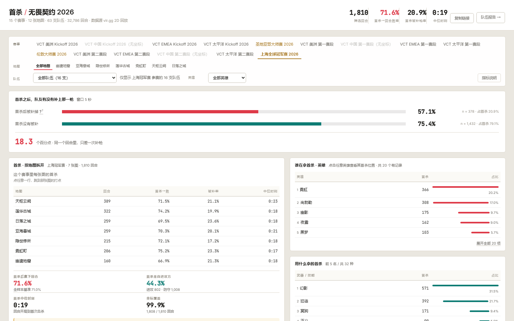
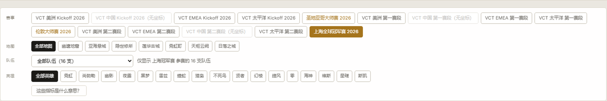
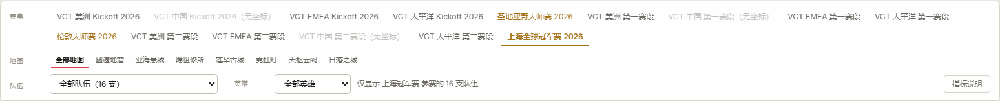
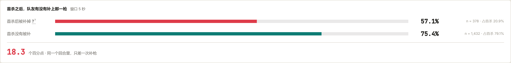
这两条我要你点头：都会改变阅读方式，不是纯样式
| 问题 | 为什么值得改 | 代价 |
|---|---|---|
| 表格没有「整列底色」 | VLR 的关键列直接按数值深浅上底色，读者不用心算谁高谁低。 这是「专业工具」最强的信号，也是目前最缺的一层。 | 要在 JS 里按分位数算颜色，且必须配图例；配色不当会变成误导。 |
| 六个面板仍靠边框分组 | OWID 靠留白分组。去掉一半边框、把间距拉到 32–40px，会更不像模板。 | 页面会变高；窄屏上留白分组容易失效，得单独处理。 |
都能直接打开，不用登录
| 站点 | 看什么 |
|---|---|
| Plausible 公开看板 plausible.io/plausible.io | 唯一一个「真实产品 + 同类结构 + 可公开访问」的样本。最值得反复看的一张。 |
| VLR 数据页 vlr.gg/stats | 高密度表格 + 原生控件 + 整列底色。也是我们的数据源。 |
| Tabler 预览 tabler.io/preview | 最干净的开源后台。看 KPI 怎么和迷你折线配。 |
| Tableau Public public.tableau.com | 看「界面隐形、内容当主角」是什么感觉。 |
| Our World in Data ourworldindata.org | 衬线标题 + 留白分组 + 无边框图表。 |
| The Pudding pudding.cool | 看「刻意的参差」长什么样，反模板的最佳样本。 |
| Tremor tremor.so | 图表组件的默认样式，抄它的坐标轴和网格线克制程度。 |
| D3 图库 observablehq.com/@d3/gallery | 同一个数据有多少种画法。选图之前先来这里看一眼。 |
| Grafana Play play.grafana.org | 不用登录就能进的真实监控台。看时间序列的密度处理。 |
| Metabase metabase.com | BI 工具里排版最克制的。看它首页那张「1,228」的看板截图。 |
| Linear linear.app | 暗色 + 极简的标杆。看它的留白和字号层级，不是看它的颜色。 |
| Stripe stripe.com | 营销页与产品 UI 的衔接方式，值得看它怎么把截图放进页面。 |
上面是「具体看哪一页」。如果你要自己翻，按用途分：